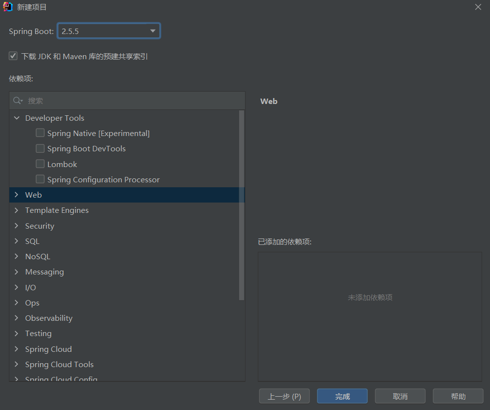

IDEA提供 Spring Initailizr （项目初始化向导）来方便我们创建 SpringBoot 项目，但是在使用过程中依然可能会遇到一些问题。
这里记录了通过 Spring Initailizr 创建项目的方式、创建低版本SpringBoot 项目的方法，以及找不到 Spring Initailizr 创建选项时的解决方法。
Spring Initailizr 创建项目的一般方法
功能
在创建项目时，不在需要选择创建Maven项目，而是通过这个向导创建。可以简化创建过程。
使用方法
选择创建 Spring Initailizr 项目填写信息

选择需要的开发场景
等待项目生成
IDEA会「自动依赖引入、自动创建项目结构、自动编写好主配置类」
创建低版本SpringBoot项目
（此方法似乎已经失效）
创建项目时发现，IDEA只能选择一些新的版本的SpringBoot。我们可以遵循下述方法给SpringBoot“降级”：
任意选择创建一个版本，等待项目文件构建完成.。
在
pom.xml中注释掉单元测试(spring-boot-starter-test)部分的dependency1
2
3
4
5
6<!-- 注释单元测试部分的dependency后修改版本 -->
<!-- <dependency>-->
<!-- <groupId>org.springframework.boot</groupId>-->
<!-- <artifactId>spring-boot-starter-test</artifactId>-->
<!-- <scope>test</scope>-->
<!-- </dependency>-->在
<parent>中修改版本号，点击maven导入释放单元测试部分注释
找不到 Spring Initailizr 选项的原因
Spring Initailizr 仅针对 IDEA Ultimate 版本提供，并不对 IDEA 社区版 提供。
如果你使用 IDEA 2020.3 版本或更旧的版本，可以使用 intellij-spring-assistant 插件实现这个功能。请参考 https://github.com/eltonsandre/intellij-spring-assistant
如果使用更新版本，推荐安装 IDEA Ultimate 版本，学生或教师可以在 https://www.jetbrains.com/zh-cn/community/education/#students 申请免费许可证。